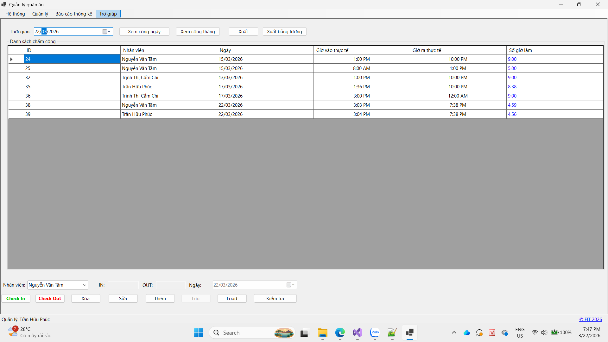

Hướng dẫn sử dụng màn hình Chấm công.

Bước 1: Tiến hành đăng nhập vào hệ thống.
Bước 2: Vào tab Quản lý, chọn mục Chấm công. Hệ thống sẽ hiển thị danh sách Chấm công lên màn hình.
Bước 1: Nhấn chọn tên nhân viên và nhấn Check In.
Bước 2: Hệ thống sẽ thêm dòng chấm công với giờ out mặc định là 24:00 cùng ngày.
Bước 3: Tiến hành Check Out cho nhân viên tương tự, hệ thống sẽ cập nhật lại giờ Out đúng thực tế.
Bước 1: Nhấn chọn Chấm công cần được sửa thông tin.
Bước 2: Nhập đầy đủ các trường thông tin.
Bước 3: Nhấn chọn Lưu, hệ thống sẽ cập nhật dữ liệu xuống danh sách Chấm công.
Bước 1: Nhấn chọn Chấm công cần xóa.
Bước 2: Nhấn xóa và hệ thống sẽ hiển thị thông báo, nhấn OK để hoàn thành thao tác.
Bước 1: Chọn chức năng thời gian cần xem bằng ô chọn thời gian.
Bước 2: Tiếp tục nhấn chọn Xem công ngày hoặc Xem công tháng.
Bước 3: Hệ thống sẽ trả danh sách chấm công ra màn hình, nếu kết quả rỗng hệ thống sẽ trả về thông báo .
Bước 1: Chọn chức năng xuất.
Bước 2: Hệ thống sẽ hiển thị Dialog để chọn vị trí lưu file excel.
Bước 3: Nhấn chọn Open, hệ thống sẽ trả kết quả xuất file thành công/thất bại.
Bước 1: Chọn chức năng xuất bảng lương.
Bước 2: Hệ thống sẽ hiển thị Dialog để chọn vị trí lưu file excel và dựa trên bảng công của tháng đang chọn để tính bảng lương.
Bước 3: Nhấn chọn Open, hệ thống sẽ trả kết quả xuất file thành công/thất bại.
Bước 1: Chọn chức năng kiểm tra.
Bước 2: Hệ thống sẽ dựa trên lịch làm trong cùng khoản thời gian để xác định ca làm đi trễ/ ca làm phát sinh.